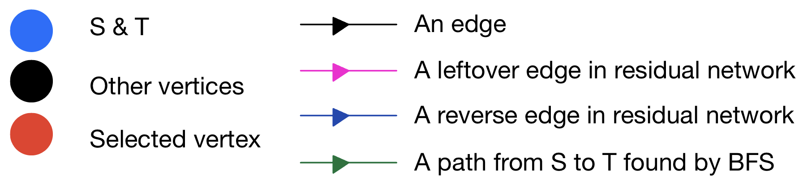

This is the project demo page by Ze for Algo2 class with Dr. Aloupis.
Ford-Fulkerson method is an algorithm for determining the maximum flow in a directed graph with constant weights. In this problem, we have a source S with unlimited resources, a destination T to send the resources, and other middle vertices. The weight of each edge in the graph denotes the maximum resources that can be transferred on that edge. The problem is to find out the maximum resources that can be transferred from S to T per time interval.
The colors of the edges used in the demo are the same as those in the lecture slides. (To avoid display issues, avoid aligning vertices vertically.) A color table is attached below.
